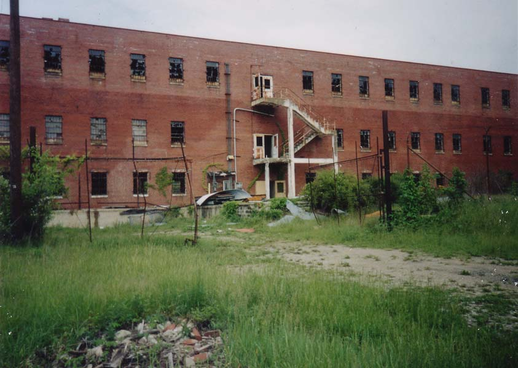
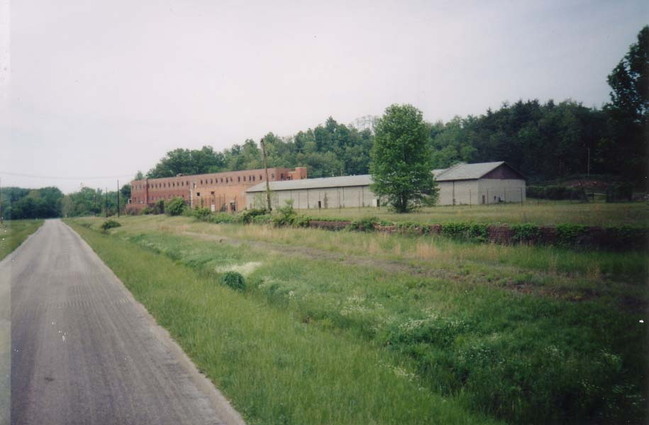
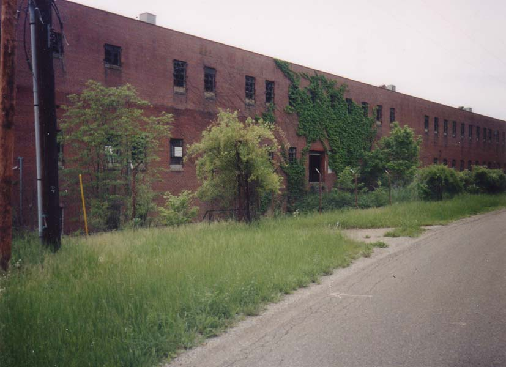
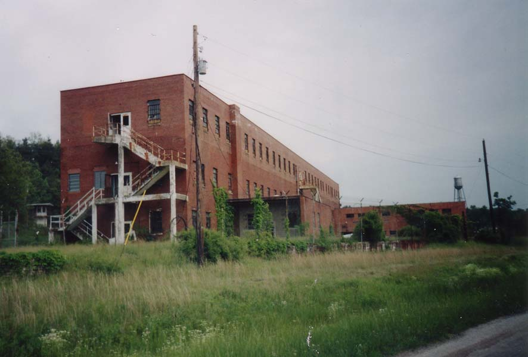

Who doesn't love a good abandoned prison? They're great places to explore, which is why it's so unfortunate that they get demolished so frequently. The Ohio Penitentiary dated to the 1830s, but they knocked it down to build a hockey stadium. Mansfield's State Reformatory is being restored, but now that it's occupied it's no longer a real prospect for infiltration. The Boys' Industrial School in Lancaster has been taken over by an adult prison.

But every once in a while you get lucky and stumble across one. The Junction City Prison in Perry County is one I found after being told about it by several people.

I've come across surprisingly little information about the history of this building, which I first heard about from a friend of mine in Lancaster. After a lot of looking I've determined that it was a satellite of the Ohio Penitentiary in Columbus, a brick-making factory which employed prison labor. Aged or disabled convicts with good behavior records from the Pen were sent here to make bricks in the furnaces. The bricks went to state building projects, including institutional structures and streets. Interestingly, the Junction City brickmaking prison had a sister institution, also governed by the administration of the Ohio Pen and also now abanonded, just outside the town of Roseville near the Muskingum county line.
This prison was built as a brick plant in 1908 by the town of Junction City, but it was bought by the state in 1913. In 1928 the prison burned but it was rebuilt using, not surprisingly, prison-made bricks. It closed again briefly between 1935 and 1938 as part of Depression-era cutbacks, but when it reopened they added a third floor and annexed 40 more acres for the farm. An educational/rehabilitational building was tacked on in 1970, only to see the prison close down for good in 1977. The prisoners here weren't always on their best behavior; in 1927 guard Grant Weakly was killed by two prisoners named Patrick Riley and Fred Kellogg during an escape attempt. They were later apprehended near New Lexington.

The most interesting chapter in the history of the Junction City Prison was the 1978 filming of the Robert Redford film Brubaker. Redford plays a progressive warden who turns a brutal and failing prison around. The movie also featured Yaphet Kotto, David Keith, and Morgan Freeman. It's funny that the plot of the movie has the prison (called Wakefield State in the script) falling apart, with the ceiling caving in at one point. When they wanted a crappy old prison building, they came here. If you visit the prison and watch the movie you can see where everything is. Brubaker lived in a house which is still standing across a field from the prison. The movie was set in Arkansas, but they used Ohio as a substitute. When it came out, the governor of Arkansas was a thirty-something guy named Bill Clinton. Clinton appeared on The Today Show to respond to Redford's allegations about substandard prison conditions in his state.
As you can see, one of the structures remaining from the pre-Brubaker days is the guard tower. Click below to view some photos of it as it appears today.

The Guard Tower
They did not film Brubaker using real prisoners, which means the building was unused by 1980. At that time it was in the process of being turned into an industrial park of sorts, with different companies occupying different parts of the prison. They are the ones who stripped the cells out. Since then it was actually occupied briefly by a pizza place, of sorts; the company that occupied the prison made frozen pizza kits for charities to sell. The frozen pizza place occupied the newer, one-story cinderblock wing of the prison. I don't know what they were called, but if it wasn't Big House Pizza, they really missed out. They left a couple of ovens behind, as well as a mysterious toxic white powder you'll read more about later.

Since then the place has been falling more and more into disrepair. Just about every pane of glass in the windows has been broken. It's not even boarded up or sealed very well; the gates in the tall barbed-wire fence have been knocked aside or flattened, and the doors stand wide open. People must explore this place pretty regularly.

I visited the Junction City Prison several times in the first half of 2001, mostly with my girlfriend at the time. We even went at night. It's not haunted that I know of, but the place is still plenty creepy after dark. Even though it's not as massive as most prisons, the Junction City Prison still stands a good four stories and spreads down the length of an acute angle formed by two roads.

The brick-making shop is right next door to the prison--for now. It's in the process of being demolished. To visit it, click below.
UPDATE: The whole Junction City Prison, main building as well as brick shop, has been demolished, as of May 2005. R.I.P.

The Prison Brick Shop
And here is the main prison building itself, which I visited on countless occasions between my first discovery of the building with my then-girlfriend in the early part of 2001, all the way through January of 2005, when Ryan (aka Rookie) from the Illicit Ohio website and I took morning news anchor Andy Dominianni and a producer from WCMH NBC4 Columbus through on a televised exploration. Though the final destruction of the lovely prison building means no one will ever enjoy it again, you can at least take a look at the photographs I took on some of those tours. To enter the Junction City Prison (in a virtual sense), click below.

ENTER
Illicit Ohio: Junction City Prison
Grave Addiction: Junction City Prison
Back
forgottenohio@yahoo.com